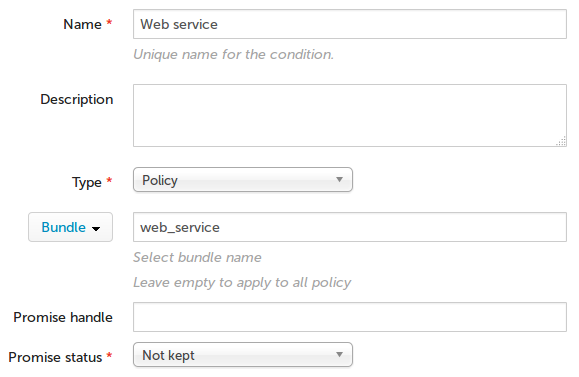

Integrating alerts with ticketing systems
Custom actions can be used to integrate with external 3rd party systems. This tutorial shows how to use a custom action script to open a ticket in Jira when a condition is observed.
How it works
We assume that there is already a CFEngine policy bundle in place called web_service that ensures an important service is working.
As we are already using the JIRA ticketing system to get notified about issues with the infrastructure, we want CFEngine to open a ticket if our web_service bundle fails (is not kept). This is done centrally on our hub, because it knows the outcome of the policy on all the nodes. We will only open a ticket once the alert changes state to triggered, not while it remains in triggered, to avoid an unnecessary amount of tickets being automatically created.
Note however that it is possible to expand on this by adjusting the Custom action script. For example, we could create reminder tickets, or even automatically close tickets when the alert clears.
Create a Custom action script that creates a new ticket
Log in to the console of your CFEngine hub, and make sure you have python and the jira python package installed (normally by running
pip install jira).On your workstation, unpack cfengine_custom_action_jira.py to a working directory.
Inside the script, fill in
MYJIRASERVER,MYUSERNAMEandMYPASSWORDwith your information.Test the script by unpacking alert_parameters_test into the same directory and running
./cfengine_custom_action_jira.py alert_parameters.Verify the previous step created a ticket in JIRA. If not, recheck the information to typed in, connectivity and any output generated when running the script.
Upload the Custom action script to the Mission Portal
Log in to the Mission Portal of CFEngine, go to Settings (top right) followed by Custom notification scripts.
Click on the button to Add a script, upload the script and fill in the information as shown in the screenshot.

Click save to allow the script to be used when creating alerts.
Create a new alert and associate the Custom action script
Log into the Mission Portal of CFEngine, click the Dashboard tab.
Click on the existing Policy compliance widget, followed by Add alert.

Name the alert "
Web service" and setSeverity-levelat "high".Click create new condition and leave Name "
Web service".Select Type to "
Policy".Select Filter to "
Bundle", and type "web_service".Type Promise Status to "
Not kept".
Associate the Custom action script we uploaded with the alert.

Conclusions
In this tutorial, we have shown how easy it is to integrate with a ticketing system, with JIRA as an example, using CFEngine Custom actions scripts.
Using this Custom action, you can choose to open JIRA tickets when some or all of your alerts are triggered. But this is just the beginning; using Custom actions, you can integrate with virtually any external system for notifying about- or handling triggered alerts.
Read more in the Custom action documentation.